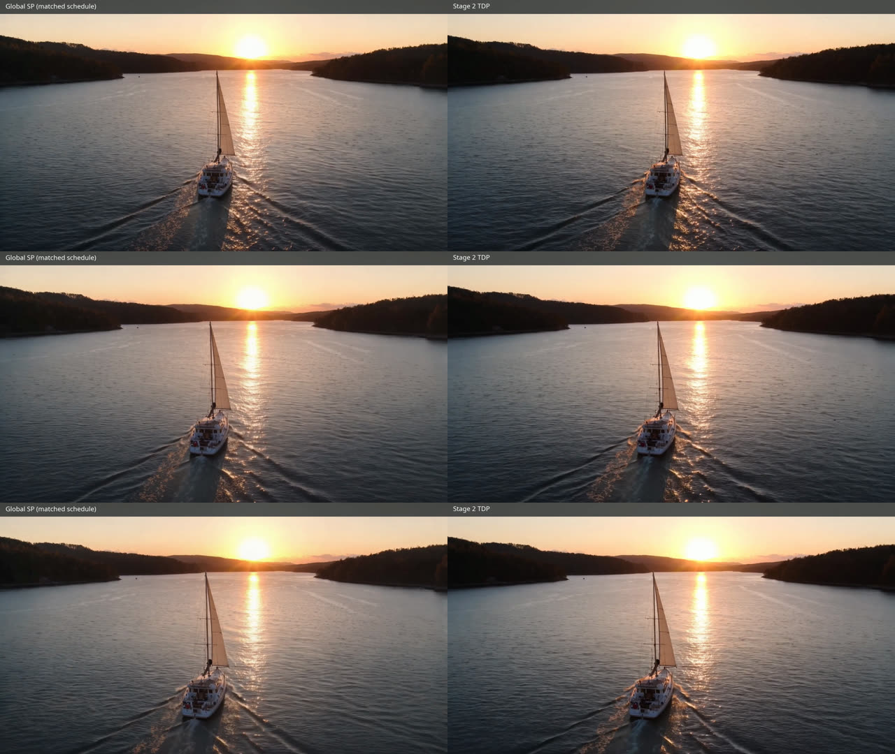

vLLM-Omni · NVIDIA B300 · 4K text-to-video
Global SP vs Stage-2 TDP
LTX-2.5 keeps four-way global Ulysses sequence parallelism in Stage 1, then compares global attention with a 2x2 grid of overlapping local Stage-2 tiles. Prompt, seed, sigma schedule, frames, and backend are held fixed.
Global SP · matched schedule
Stage-2 tiled data parallel
Request speedup
0.932x
TDP is 7.3% slower in this single-seed run.
Full-frame similarity
0.9205 SSIM
31.78 dB PSNR over all 121 frames.
Overlap-band similarity
0.9205 / 0.9215
Horizontal / vertical SSIM; no obvious visual seam.
End-to-end result
| Mode | Request latency | Worker peak reserved memory |
|---|---|---|
| Global SP | 36.6778 s | 232,806 MiB |
| Stage-2 TDP | 39.3526 s | 233,902 MiB |
Overlap diagnostics
| Region | SSIM | PSNR |
|---|---|---|
| Full frame | 0.920476 | 31.783358 dB |
| Horizontal overlap band | 0.920530 | 33.386542 dB |
| Vertical overlap band | 0.921495 | 28.926828 dB |
Interpretation
The tiled path successfully generates a coherent 3840x2160 video, but it is not a performance win in this configuration. Full-resolution latent handling, tile assembly, all-reduce, and VAE decode outweigh the local attention savings. TDP is approximate local attention, so similarity is reported as a diagnostic rather than a parity gate.
Frames 0, 60, and 120
